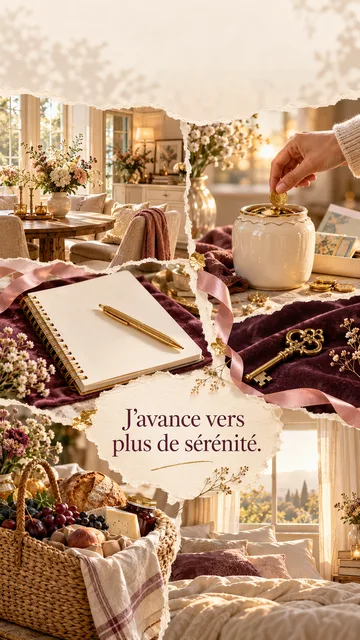
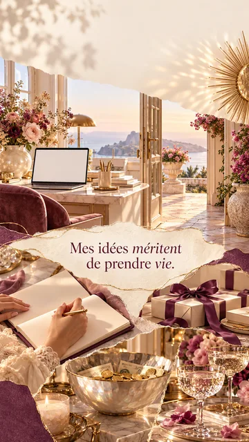

Un tableau de vision, c’est quoi ?
Un tableau de vision (on dit aussi vision board, tableau d’intention ou tableau des rêves) est une composition visuelle de ce que tu souhaites vivre. On y colle des photos, des mots, des couleurs, des phrases. Il peut être sur un panneau de liège, une grande feuille, la porte d’un placard, une page de carnet, ou l’écran de ton téléphone.
Son principe est simple : ce qu’on voit chaque jour reste présent à l’esprit. Ton attention se tourne plus facilement vers ce qui compte pour toi, tu remarques davantage les occasions qui vont dans ce sens, et tu te souviens de ce que tu as choisi quand le quotidien t’emporte. La dopamine, le messager de l’envie, aime savoir vers quoi elle avance : l’article sur les émotions et les hormones l’explique.
Pas de baguette magique. Un tableau de vision ne remplace pas l’action, et il ne garantit rien. C’est une boussole, pas une commande passée à l’univers. Sa vraie force : t’aider à clarifier ce que tu veux, et à poser chaque jour un petit pas dans cette direction.
Le lien avec l’intention : commencer par le ressenti
Beaucoup de tableaux de vision ressemblent à des catalogues : une maison, une voiture, une plage. Rien de mal à cela, mais les tableaux les plus parlants partent d’une question plus profonde : comment veux-tu te sentir ? Apaisé·e, libre, entouré·e, fier·ère de toi, en sécurité, vivant·e ?
L’intention, c’est la direction intérieure. Les images viennent ensuite la rendre visible. Une plage peut représenter le repos, la liberté ou la joie de vivre : c’est à toi de savoir ce qu’elle dit pour toi. Pour choisir ton intention, tu peux partir de tes valeurs : la liste des valeurs t’aide à identifier les cinq qui comptent le plus.
Ce que je veux avoir
« Je veux un nouveau travail. » C’est concret, mais cela ne dit rien de ce que tu cherches vraiment.
Ce que je veux vivre
« Je veux me sentir utile et reconnu·e dans ce que je fais. » Cette phrase peut guider bien plus de choix, et inspirer des images plus justes.
Comment créer ton tableau de vision en 6 étapes
Choisis ta période et ton intention
Un mois, une saison, une année ? Écris en une phrase comment tu veux te sentir pendant cette période. Exemple : « Cette année, je veux me sentir légère et entourée. »
Choisis trois domaines de vie
Inutile de tout couvrir. Trois domaines suffisent : par exemple l’amour, le travail et le temps pour soi. Un tableau trop chargé perd sa force.
Rassemble des images qui font ressentir
Magazines, photos personnelles, cartes postales, images en ligne. Ne garde que celles qui te font quelque chose dans le corps : un sourire, un soupir de soulagement, un frisson. Si une image te laisse indifférent·e, laisse-la.
Ajoute des mots et une phrase au présent
Trois mots qui résument ton intention (« douceur », « confiance », « joie ») et une phrase écrite comme si c’était déjà vrai : « J’ai le droit de prendre ma place. » Le présent rend la phrase plus proche, plus habitable.
Dispose et place-le là où tu le verras
Près de ton lit, sur ton bureau, à l’intérieur d’une porte de placard, ou en fond d’écran de téléphone : l’important est de le croiser plusieurs fois par jour, sans effort.
Relie-le à un premier pas
Pour chaque domaine, note un petit geste à faire dans les 48 heures. Puis, chaque mois, regarde ton tableau : qu’est-ce qui s’est rapproché ? Qu’est-ce qui a changé de sens ? Tu as le droit de le modifier.
Vision board papier : le faire à la main
Le tableau de vision papier, c’est la version la plus ancienne et souvent la plus marquante. Découper, choisir, coller : le geste prend du temps, et c’est justement ce temps qui t’aide à préciser ce que tu veux. Beaucoup de personnes se souviennent mieux d’un tableau qu’elles ont fabriqué de leurs mains.
- Le support : un panneau de liège, un grand carton, une feuille A3, une page de carnet, ou l’intérieur d’une porte de placard si tu préfères le garder pour toi.
- Le matériel : des magazines, tes propres photos, des cartes postales, des images imprimées, des ciseaux, de la colle ou des épingles, quelques feutres pour écrire tes mots.
- Le moment : offre-toi une heure tranquille, une musique douce, un thé. Fais d’abord un tas avec toutes les images qui t’attirent, puis ne garde que celles qui te font vraiment quelque chose.
- La disposition : place au centre ton intention ou ta phrase au présent, puis organise les images autour, par domaine de vie. Laisse un peu de vide : un tableau qui respire se regarde plus volontiers.
- L’endroit : là où ton regard passe chaque jour sans effort, près de ton lit, de ton bureau ou de ton miroir.
Son avantage : il est concret, tu peux le toucher, le compléter au fil des mois et le garder comme souvenir de ce chemin. Sa limite : il reste dans une pièce, alors que tu passes tes journées ailleurs. C’est pourquoi beaucoup de personnes en font aussi une photo pour le garder sur leur téléphone.
Vision board écran : le garder sur ton téléphone
Le tableau de vision numérique a un grand atout : il te suit partout. Ton téléphone, tu le regardes des dizaines de fois par jour. En faire le fond d’écran, c’est croiser ton intention à chaque fois que tu le déverrouilles, dans le métro, au travail, le soir avant de dormir.
- Le plus rapide : choisis un des fonds d’écran prêts à télécharger plus bas, celui dont la phrase te parle le plus.
- Le plus personnel : compose le tien avec l’outil gratuit de cette page, avec jusqu’à trois images, tes trois mots et ta phrase. Tes photos restent dans ton navigateur.
- Écran de verrouillage ou écran d’accueil ? Mets ta phrase sur l’écran de verrouillage, c’est celui que tu vois le plus. Garde une image plus douce, sans texte, pour l’écran d’accueil, afin que tes applications restent lisibles.
- Tu as fait un tableau papier ? Prends-le en photo à la lumière du jour, bien de face, et utilise cette photo comme fond d’écran : tu as le meilleur des deux.
Son avantage : il est toujours avec toi et se change en deux minutes quand ton intention évolue. Sa limite : on finit par ne plus le voir. Change-le à chaque saison, ou chaque mois, pour qu’il garde sa force.
Si tu aimes faire de tes mains
Pour prendre le temps, ressentir chaque choix, et garder une trace concrète de ton chemin.
Si tu veux le voir partout
Pour garder ton intention sous les yeux toute la journée, et la faire évoluer facilement.
Idées de tableau de vision par domaine de vie
- Amour et coupleDeux mains qui se tiennent, une table dressée pour deux, un chemin à deux. Mots : complicité, confiance, tendresse. Si tes histoires se ressemblent toutes, lis l’article sur l’imago.
- Amour de soiUne rose épanouie, un miroir dans la lumière, un bain chaud. Mots : douceur, fierté, tel·le que je suis.
- Famille et lignéeUn arbre aux racines visibles, une table de famille, une vieille photo apaisée. Mots : racines, paix, transmission.
- Travail et projetsUn atelier lumineux, un carnet ouvert, une porte qui s’ouvre. Mots : sens, élan, reconnaissance.
- Argent et sécuritéUne maison accueillante, un jardin qui pousse, un coffre ouvert. Mots : sécurité, abondance, liberté. Si l’argent est un sujet sensible, l’article argent et lignée peut t’éclairer.
- Corps et énergieUne marche en forêt, une danse, un lever de soleil. Mots : vitalité, souffle, légèreté.
- Amitiés et liensUn repas entre amis, des rires, une lettre reçue. Mots : partage, joie, appartenance.
- Temps pour soiUn fauteuil près d’une fenêtre, une tasse fumante, un livre. Mots : calme, lenteur, présence.
Et ta lignée dans ton tableau de vision ?
Ce qu’on s’autorise à rêver vient aussi de sa famille. Certaines personnes n’osent pas mettre sur leur tableau une maison, un voyage ou un couple heureux, parce que personne dans la famille ne l’a vécu, ou parce que cela semblerait « trop ». C’est parfois une loyauté familiale invisible qui parle.
- Quand tu choisis une image, demande-toi : est-ce que je la choisis pour moi, ou pour faire plaisir à quelqu’un de ma famille ?
- Y a-t-il un rêve que tu n’oses pas afficher ? À qui, dans ta famille, ce rêve a-t-il été interdit ?
- Peux-tu ajouter une image qui honore tes ancêtres, une force héritée que tu veux garder ?
Ces questions sont des pistes de réflexion. Pour aller plus loin, la lettre dans un an t’invite à écrire à la personne que tu deviens, un très beau complément au tableau de vision.
4 fonds d’écran vision board à télécharger
Pas le temps de composer ton tableau aujourd’hui ? Voici quatre fonds d’écran prêts à l’emploi, au format téléphone (1080 × 1920). Trois portent déjà une phrase au présent, le quatrième est une page de lumière, pour laisser respirer ton écran ou garder ta propre phrase en tête. Choisis celui qui te fait quelque chose dans le corps, pas celui qui serait « raisonnable ».
-

Un foyer paisible
« J’avance vers plus de sérénité. » Pour une saison où tu veux te sentir en sécurité chez toi, avec tes comptes, avec ton rythme. Mots : calme, sécurité, douceur.
Télécharger -
Une vie libre
« Je construis une vie libre. » Pour celles et ceux qui ont envie d’air, de mouvement, de choix. Demande-toi : libre de quoi, et libre pour quoi ? Mots : liberté, élan, horizon.
Télécharger -

Mes idées prennent vie
« Mes idées méritent de prendre vie. » Pour un projet, une entreprise, un livre, une reconversion. Un rappel que tes idées ont le droit d’exister. Mots : oser, créer, reconnaissance.
Télécharger -
La fenêtre qui s’ouvre
Sans texte. Une main qui ouvre le rideau : le tout premier geste d’un nouveau chapitre. Idéal en écran de verrouillage, avec ta phrase en tête. Mots : renouveau, lumière, premier pas.
Télécharger


Pour l’installer : sur iPhone, ouvre l’image, touche Partager puis « Utiliser comme fond d’écran ». Sur Android, ouvre l’image puis « Définir comme fond d’écran ». Et pour que l’image travaille vraiment avec toi, écris dans ton carnet ce qu’elle représente pour toi, puis note un premier petit pas à faire cette semaine.
Ces fonds d’écran sont offerts pour ton usage personnel. Ils ne parlent pas encore assez de toi ? L’outil juste en dessous te permet de composer le tien, avec tes images, tes mots et ta phrase.
Créer ton tableau de vision en fond d’écran
Le plus simple pour voir ton tableau chaque jour, c’est d’en faire le fond d’écran de ton téléphone. Choisis jusqu’à trois images dans la galerie (ou ajoute tes propres photos), écris tes trois mots et ta phrase, choisis une ambiance, puis télécharge l’image. Tout se fait dans ton navigateur : tes photos ne sont ni envoyées, ni enregistrées.
L’outil se charge…
Questions fréquentes
- Qu’est-ce qu’un tableau de vision ?
- C’est une composition d’images, de mots et de phrases qui représentent la vie que tu souhaites vivre. On le place à un endroit où on le voit chaque jour, pour garder son intention présente à l’esprit et remarquer les occasions qui vont dans ce sens.
- Comment faire un vision board ?
- Choisis une période et une intention, puis trois domaines de vie. Rassemble des images qui te font ressentir quelque chose, ajoute trois mots et une phrase au présent, dispose le tout sur un support que tu verras chaque jour, et relie-le à un premier petit pas.
- Que mettre sur son tableau de vision ?
- Des images qui évoquent comment tu veux te sentir, plus que ce que tu veux posséder : un chemin lumineux, deux mains qui se tiennent, un fauteuil près d’une fenêtre. Ajoute des mots clés (douceur, confiance, joie) et une phrase écrite comme si elle était déjà vraie.
- Un tableau de vision fonctionne-t-il vraiment ?
- Il ne fait rien apparaître par magie. Il aide à clarifier ce qu’on veut, à garder le cap et à orienter son attention, ce qui facilite le passage à l’action. Son efficacité dépend surtout des petits pas que tu poses ensuite.
- Comment mettre son tableau de vision en fond d’écran ?
- Utilise l’outil gratuit de cette page : choisis jusqu’à trois images, écris tes mots et ta phrase, choisis une ambiance et télécharge l’image. Sur iPhone, ouvre-la, touche Partager puis « Utiliser comme fond d’écran ». Sur Android, ouvre-la puis « Définir comme fond d’écran ».
- Où trouver un fond d’écran vision board gratuit ?
- Cette page propose quatre fonds d’écran vision board gratuits au format téléphone : un foyer paisible, une vie libre, des idées qui prennent vie et une fenêtre qui s’ouvre. Touche « Télécharger » sous l’image choisie, puis installe-la depuis ta galerie. Tu peux aussi composer le tien avec l’outil gratuit de la page.
- Vision board papier ou écran : que choisir ?
- Le vision board papier, fait à la main avec des images découpées et collées, aide à prendre le temps et à préciser ce qu’on veut. Le vision board écran, en fond de téléphone, te suit partout et se change facilement. Tu peux faire les deux : crée ton tableau papier, puis prends-le en photo pour en faire ton fond d’écran.
Ces contenus proposent une lecture symbolique de développement personnel, en complément de tout suivi médical. Les liens familiaux évoqués sont des pistes de réflexion, jamais des preuves ni des causes. Si ce que tu vis pèse sur ton quotidien, parles-en à une personne de confiance ou à un·e professionnel·le de l’accompagnement.